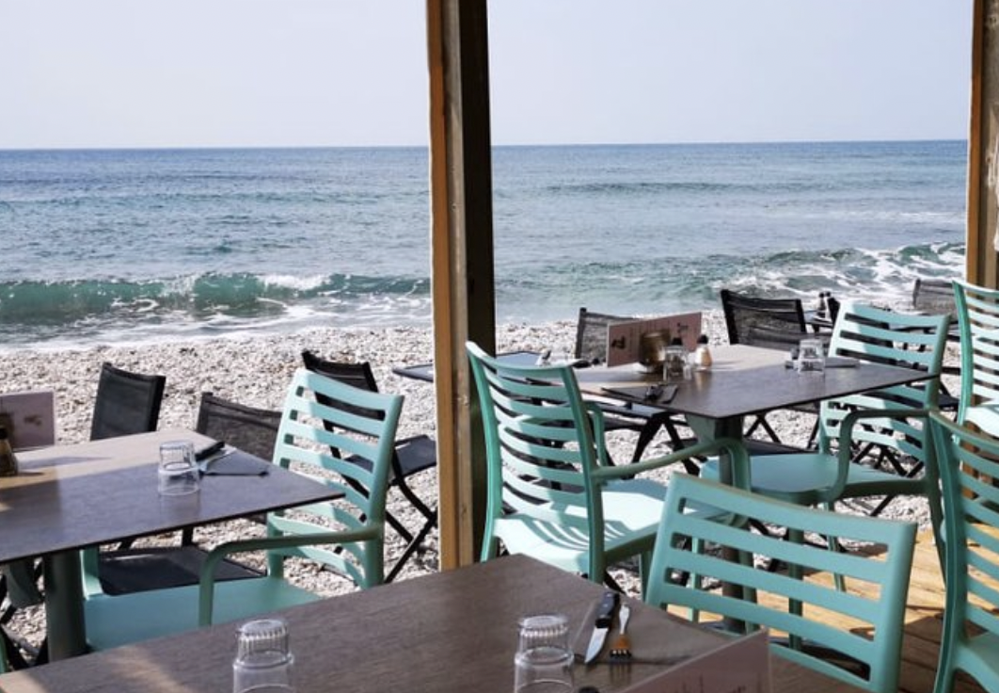
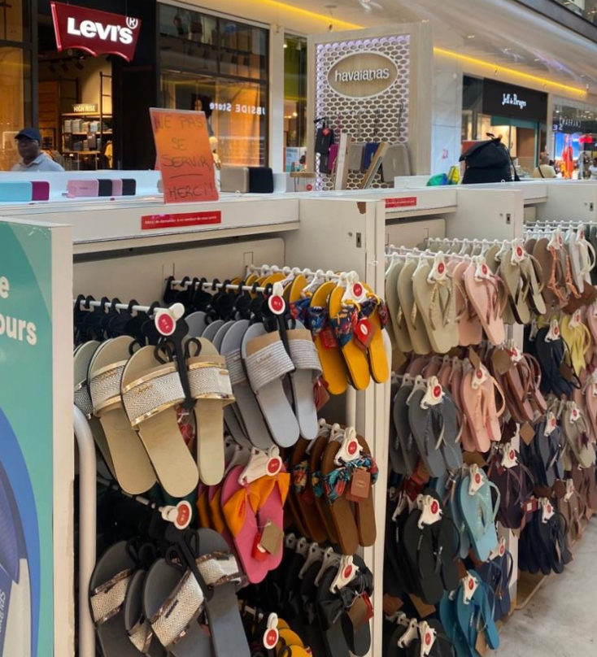

My professional Experiences
-
Work experience 1st year : During my first year, I had the opportunity to do a one-month work placement as a waitress in a beach restaurant in Marseille. It was an intense and physical experience, but incredible on a human level. The long days and hectic pace taught me resilience and the importance of teamwork. I discovered the art of juggling customer requests and service imperatives, reinforcing my ability to manage stress. Beyond the technical aspects, this internship taught me a valuable lesson about communication and empathy, essential skills in any professional environment. In retrospect, although the work was sometimes difficult, the encounters and human lessons I took away from this experience were invaluable.
 -
Work experience 2nd year : I had the opportunity to do a sales internship at Havaianas, where I spent two months selling flip-flops. This experience enabled me to develop significant skills in sales and customer service. Selling items as iconic as Havaianas flip-flops was a unique experience, confronting me with the diversity of customer expectations. Beyond the commercial aspects, this internship gave me a valuable perspective on the fashion market. These two months gave me the opportunity to perfect my communication skills, hone my sense of service and, above all, blossom in a dynamic environment focused on customer satisfaction.
 -
Work experience 3rd year : During a four-month internship in the consulting sector, and more specifically in the customs field, I plunged into the heart of the challenges of international trade. This experience gave me an in-depth understanding of customs regulations, import and export processes. This internship not only enriched my knowledge of the sector but also consolidated my interest in customs consulting and strengthened my determination to contribute to this dynamic field.

-
Work experience 4st year : I'm doing my work-study placement at Pernod Ricard as a Business Analyst & Consumer Insights
That's how it's been for my internships since I came to IESEG. I have other diplomas that I've entered in the table just below!
| Boat License | Driving license |
| PSC1 holder | IELTS |